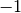
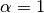
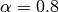
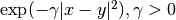
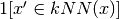

3.12. Semi-Supervised¶
Semi-supervised learning is a situation in which in your training data some of the samples are not labeled. The semi-supervised estimators, in sklean.semi_supervised are able to make use of this addition unlabeled data to capture better the shape of the underlying data distribution and generalize better to new samples. These algorithms can perform well when we have a very small amount of labeled points and a large amount of unlabeled points.
Unlabeled entries in y
It is important to assign an identifier to unlabeled points along with the labeled data when training the model with the fit method. The identifier that this implementation uses the integer value .
3.12.1. Label Propagation¶
Label propagation denote a few variations of semi-supervised graph inference algorithms.
- A few features available in this model:
- Can be used for classification and regression tasks
- Kernel methods to project data into alternate dimensional spaces
scikit-learn provides two label propagation models: LabelPropagation and LabelSpreading. Both work by constructing a similarity graph over all items in the input dataset.
An illustration of label-propagation: the structure of unlabeled observations is consistent with the class structure, and thus the class label can be propagated to the unlabeled observations of the training set.
LabelPropagation and LabelSpreading differ in modifications to the similarity matrix that graph and the clamping effect on the label distributions. Clamping allows the algorithm to change the weight of the true ground labeled data to some degree. The LabelPropagation algorithm performs hard clamping of input labels, which means . This clamping factor can be relaxed, to say , which means that we will always retain 80 percent of our original label distribution, but the algorithm gets to change it’s confidence of the distribution within 20 percent.
LabelPropagation uses the raw similarity matrix constructed from the data with no modifications. In contrast, LabelSpreading minimizes a loss function that has regularization properties, as such it is often more robust to noise. The algorithm iterates on a modified version of the original graph and normalizes the edge weights by computing the normalized graph Laplacian matrix. This procedure is also used in Spectral clustering.
Label propagation models have two built-in kernel methods. Choice of kernel effects both scalability and performance of the algorithms. The following are available:
- rbf ().
is specified by keyword gamma.
- knn ().
is specified by keyword n_neighbors.
RBF kernel will produce a fully connected graph which is represented in memory by a dense matrix. This matrix may be very large and combined with the cost of performing a full matrix multiplication calculation for each iteration of the algorithm can lead to prohibitively long running times. On the other hand, the KNN kernel will produce a much more memory friendly sparse matrix which can drastically reduce running times.
Examples
References
[1] Yoshua Bengio, Olivier Delalleau, Nicolas Le Roux. In Semi-Supervised Learning (2006), pp. 193-216
[2] Olivier Delalleau, Yoshua Bengio, Nicolas Le Roux. Efficient Non-Parametric Function Induction in Semi-Supervised Learning. AISTAT 2005 http://research.microsoft.com/en-us/people/nicolasl/efficient_ssl.pdf